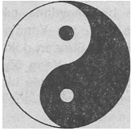
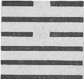

Milattan sonra birinci yüzyılda Çin'e gelen Buddhizm, burada varlığı iki bin seneden beri süren bir uygarlıkla karşılaşmıştı. Bu eski uygarlıkta, felsefî öğreti zirveye Chou Dönemi'nin sonlarına doğru (yani, milattan önce 500-221 arası) ulaşmış ve bu döneme Çin felsefesinin Altın Çağı adı verilmişti.
Söz konusu felsefe sistemi ta başından beri iki karşıt öğeden oluşmaktaydı. Çok yüksek derecede gelişmiş bir sosyal bilince sahip olan pratik Çinli'ler, felsefî okullarını da şu ya da bu biçimde toplumlarının yaşamı, insanlar arası ilişkiler, ahlakî değerler ve hükümet işleri gibi konularla ilişkilendirmişlerdir. Fakat bu, Çin öğretisinin ancak bir yönüdür. Buna-karşıt olarak gelişen öğe ise, Çin karakterinin mistik yönünü tüm açıklığı ile ortaya koyar. Bu mistisizmin temelini, toplumsal ve günlük hayatın daha yüksek bir bilinçli tik düzeyine ulaştırılması gerektiği görüşü oluşturmaktadır. Bu düzeye ulaşarak, evren ile mistik bir birleşmeye gidenlere de aydınlanmış adam anlamına gelen «bilge» adı verilmiştir.
Çin bilgeleri yalnızca metafizik fikirler üretmemişler, dünyasal işlerle de yakından ilgilenmişlerdir. Onlar kendi bünyelerinde, insan doğasının iki karşıtlığını (yani, sezgisel bilgi ve karşıtı olan pratik bilgiyi, toplumsal davranışı ve mistik düşünceyi) birleştirebiliri işlerdir. Çinli'ler, bu karşıtlığı bilge ve kral benzetmelerini kullanarak açıklamaya çalışmışlardır. Bu kişiler bütünlüyle kavranabilir insanlardır ve Chuang Tzu'nun deyişi ile, «sessizlikleri ile bilge, hareketleri ile kral» olmaktadırlar(l).
Milattan önce altıncı yüzyılda, Çin felsefesin -deki sözü edilen iki karşıt öğe iki ayrı felsefî okul haline (yani, Konfüçiyanizm ve Taoizm) dönüşmüştür. Böylece Konfüçiyanizm, toplumsal örgütlenişin, insan aklının ve pratik bilginin felsefesi haline gelmiştir. Bu öğreti, Çin toplumuna gerekli olan eğitim sistemini sağlamış ve sosyal sınıfların katı bir biçimdeki oluşumuna neden olmuştur. Öğretinin ana amaçlarından bir tanesi de, geleneksel Çin aile sistemine yeni bir ahlakî temel kazandırmak ve bu aile sisteminin karmaşık yapısını ve aile büyükleri ile ilgili törenleri yeniden düzenlemek olmuştur. Ama öte yandan Taoizm.. neredeyse tümüyle doğanın gözlemlenmesi ile Doğanın Yolu'nun (yani Tao'nun) keşfi ile ilgilenmiştir. Örneğin Taoist’lere göre, insanların mutluluğu, ancak insanlar doğal düzene uydukları zaman ortaya çıkacaktır. Bunun için de insanlar içlerinden geldiğince hareket etmeli ve sezgisel bilgilerine güvenmelidirler.
Öğretideki bu iki trend, Çin felsefesinin iki kutbunu yansıtmaktadır. Ama aslında bunlar Çin'de, insan doğasının bütünsel kavranışının iki değişik görüntüsü olarak algılanmaktadır. Bu çerçevede Konfüçiyanizm, toplumsal hayat için gerekli olan çocuk eğitimi alanında rağbet görmüş, Taoizm ise insanların toplumsal kurallar tarafından yok edilen orijinal spontaneliklerini (içtenliklerini) yeniden kazandırmak ve geliştirmek amacı ile kullanılmıştır. On birinci ve on ikinci yüzyıllarda ortaya çıkan Neo-Konfüçiyanizm döneminde Konfüçiyanizm, Buddhizm ve Taoizm çerçevesinde bir senteze vardırıl,-oaya çalışılmış ve doruk noktasına en büyük Çin düşünürlerinden biri olan Chu Hsi'nin felsefesi ile ulaşmıştı. Ohu Hsi Konfüçiyanist bilgiyi, Buddhizmin ve Taoizm'in derinlikleri ile birleştirebilen olağanüstü bir filozoftu ve bu üç öğretinin (ve geleneğin) temel öğelerini kendi felsefî sentezinde göz kamaştırıcı bir biçimde birleştirmeyi başarabilmişti.
Konfüçiyanizm ismini, Kung Fu Tzu (ya da Konfüçiyus)'dan almıştır. Kung Fu Tzu, çok sayıda öğrencilere sahip olan etkili bir öğretmendi. Kendisinin ana amacını ve işlevini, eski uygarlık mirasını kendi öğrencilerine aktarmak olarak gören bilgin, kendisini bilginin aktarımı ile sınırlı kılmamış ve geleneksel fikirleri yorumlayarak, onlara kendi ahlakî görüşleri çerçevesinde yeniden bir anlam da kazandırmıştı. Kung Fu Tzu'nun öğretileri. Altı Klasikler denilen kitaplara dayanır. Bu kitaplarda felsefî öğretilerin yanı sıra şiirler, müzikler ve tarih bilgisi yer alır. Bu klasikler, Çin'in geçmiş döneminde yaşamış olan «kutsal bilgelerin» ruhanî ve kültürel mirasını oluşturmaktaydılar. Hal böyle olunca Çin geleneği, Konfüçyus'u yazar, yorumlayıcı ya da en azından bir derleyici olarak bütün bu konuların uzmanı olarak görmektedir. Fakat modern araştırmacılara göre o, Altı Klasikler'in ne yazarı, ne bir yorumlayıcısı, ve hatta ne de bir derleyicisidir. Konfüçiyus'un fikirleri «Lun Yu», ya da «Konfüçiyus Analektleri» isimli bir aforizma(*) külliyatında öğrencileri tarafından toplanmış ve derlenmiştir.
(*) İçeriklerinde derin bilgelikler bulunan küçük öyküler .Çev.)
Öte yandan Taoizm'in kurucusu Lao Tzu'dur. Bu isim aslında «yaşlı üstad» anlamına gelir. Lao Tzu, geleneksel efsaneye göre, Konfüçiyus'un yaşlı bir çağdaşı idi. Yine söylentilere göre Tzu, bir çok aforizmalar içeren ve Taoist eserlerin en önemlilerini oluşturan küçük bir de kitap yazmıştı. Bu eser Çin'de kısaca «Lao-tzu» olarak, Batı'da ise genellikle «Tao Te Ching (ya da Yol ve Kuvvetin Klasiği) diye tanınmaktadır. Bu kitabın karşıt stili ile güçlü ve şiirsel dilini daha önce vurgulamıştım. Joseph Needham, kitap hakkında, «Bence bu eser Çin dili ile yazılmış en derin ve en güzel yapıttır»(2) şeklinde bir övgüsel değerlendirmede bulunmaktadır.
Taoist kitaplar arasında ikinci bir öneme sahip olan eser ise «Chung-tzu»dur. Tao Te Ching'den çok daha kapsamlı olan bu kitabın yazarının (yani, Chung Tzu'nun Lao Tzu'dan yaklaşık olarak iki yüz yıl sonra yaşamış olduğu kabul edilmektedir. Ancak modern araştırmalara göre Chung-tzu ve belki de Lao-tzu adlı eserlerin tek bir kişi tarafından kaleme alınmış olmalarının çok güç olacağı düşünülmekte ve bunların uzun süreler içinde toplanmış Taoist yazıların bir derlenmesiyle meydana geldikleri ileri sürülmektedir.
Hem «Konfüçiyus Analektleri» ve hem de «Tao Te Ching» Çin düşünce biçimine özgü karakteristik ve çarpıcı bir stilde yazılmışlardır. Çünkü Çin aklı, soyut mantıksal düşüncelerden çok, Batı'da rastlayamadığımız ilginç bir anlaşma ve konuşma dili geliştirmiştir. Yine Çin dilinde kullanılan kelimelerin bir çoğu hem fiil, hem sıfat ve hem de isim olarak kullanılabilmektedir. Bu da Bat.'da gelişen dil anlayışından ve dil sisteminden çok farklı bir özelliği yansıtmaktadır. Yani Çin dili, gramer kurallarından çok, cümlenin sezgisel içeriğine göre değer kazanmaktadır. Klasik Çin dilindeki kelimeler, kavramların kesin olarak sınırlandırılmış olan soyut anlatımları değildir. Bu kelimeler daha çok, karmaşık duyguları ve görüntüleri çağrıştırabilen güçlü birer sembol niteliğini taşımaktadırlar. Böylesi kelimeleri kullanarak konuşan bir konuşmacının sonuçtaki amacı da, düşünsel bir fikri açıklamak yerine, dinleyenleri etkilemektir. Böylelikle, yazılmış olan bir karakter, (yani, bir kelime) soyut bir simgeden öte, organik bir içeriğe (buna bir «geştalt» de diyebilirsiniz) sahip olmaktadır. Bu sayede kelimenin içerdiği görüntüler ve fikir aktarımları aynen korunulmuş olmaktadır.
Fikir yapılarına bu kadar uyum sağlayan bir dile sahip olan Çinli filozoflar, yazılarını ve söylevlerini kısa ve öz bir biçimde açıklama imkânına kavuşmuşlardır. Böylece onların çarpıcı görüntülere yer verme şansları da bir hayli fazlalaşmıştır. Fakat doğal olarak bu zengin ve değerli görüntüler, çeviri sırasında büyük bir bölümüyle yok olmaktadırlar. Örneğin Tao Te Ching'den yapılan bir çeviri, orijinal ve karmaşık fikirlerin yalnızca bir bölümünü yansı-tabi ilmektedir. Bundan dolayı da bu karşıtlıklarla bezenmiş kitabın farklı farklı çevirileri neredeyse tamamen farklı eserlermiş gibi görünmektedirler. Fung Yu Lanin da söylediği gibi: «Aslında Lao-tzu-nun ve Konfüçiyus Analektleri'nin esas zenginliğini ve derinliğini anlatabilmek için yapılmış olan bütün çevirilerin bir bileşimi gereklidir» (3).
Hintli'ler gibi Çinli'ler de gözlemlediğimiz nesne ve fenomenlerin ardında onları bütünleştiren bir gerçeliğin var olduğuna inanırlar:
«Üç tane kavram vardır. Bunlar «bütüncülük», «bütünsellik» ve «kavrayıcılık»tır. Bu kavramlar farklı olmalarına rağmen, aynı gerçekliği ifade etmektedirler. O da her şeyin Tek oluşudur»(4).
Onlar bu gerçekliğe «Tao» (yani, orijinal anlamıyla «Yol») demişlerdir. Tao, evrenin izlediği yol ya da süreçtir, yani doğanın düzenidir. Konfüçiyusçu'lar bu kavrama daha değişik bir yorum getirmişlerdi. Onlar, insanın Tao'su ve insan toplumunun Tao'su gibi konularda da Tao kavramını kullanmışlar ve bu kavramı ahlakî açıdan doğru bir hayatın yolu olarak değerlendirmişlerdir.
Fakat esas anlamıyla Tao (yani, Kozmik Tao), en yüksek ve tanımlanamayan gerçeklik olarak açıklanmıştır. Bu bakımdan Tao'yu Hindular'daki Brahman ve Buddhistler'deki Dharmakaya'ya benzetebiliriz. Fakat Tao, söz konusu Hint kavramlarından aslen dinamik olan niteliği ile ayrılmaktadır. Çünkü bu özelliği, Çinli'lere göre evrenin özünü yansıtan önemli bir öğesidir. Yani Tao, her nesnenin dahil olduğu kozmik bir süreci ve gelişmeyi ifade etmektedir. Bu bakış açısıyla, dünya da sürekli bir akışı ve değişimi yansıtmaktadır.
Aslında süreksizlik öğretisini içeren Hint Buddhizmi de bu yaklaşıma yak,n bir görüşe sahiptir. Ancak Hint Buddhizmi, bu görüşü yalnızca insan varoluşun temel bir durumu olarak kabul etmekte ve bu hükmün psikolojik sonuçlarını işlemekle sınırlı kalmaktadır. Ama buna karşın Çinli'ler, akış ve değişim kavramlarını doğanın en önemli özelliği kabul etmekle kalmamışlar, ayrıca bu değişimin insanlarca keşfedilen sabit bir takım «kalıplar» dahilinde gerçekleştiğini de savunmuşlardı. Bilge insanlar bu kalıpları kavradıktan sonra, hareketlerini onlara göre ayarlayan insanlar olarak görülmekteydiler. Böylece bilgeler, «Tao ile bir» olmakta, yani artık doğa ile büyük bir uyuşum içinde yaşamaya başlamakta ve böylece de giriştikleri her işte başarılı olmaktadırlar. Milattan önce ikinci yüzyılda yaşamış olan filozof Huai Nan Tzu, bu konuda şunları söylemektedir:
«Tao'nun istikametine uyan birisi, yani göğün ve yerin doğal süreçlerini izleyen bir kişi, tüm dünyayı kolayca idare edebilecek bir duruma gelir»(5).
Peki insanın kavraması gereken ve kendilerini Kozmik Yol olarak gösteren bu kalıplar nelerdir? Tao'nun en temel karakteristiği, sürekli hareketliliğin ve değişimin sahip olduğu devirsel bir doğa anlayışıdır. «Geriye dönmek, Tao'nun hareketidir», der La o Tzu ve «ileriye gitmek geri dönmektir» diye ekler(6). Bu görüşün temelini, fiziksel dünyada ve insandaki tüm doğal gelişmelerin gelip-giden, ya da genişleyip-daralan devirsel kalıplardan oluştukları iddiası oluşturmaktadır.
Bu yaklaşıma, güneşin ve ayın hareket biçimlerinden ve mevsimlerin değişiminden esinlenerek varılmıştı. Fakat bu devirsellik aynı zamanda hayatın bir yasası olarak da algılanıyordu. Örneğin Çinli'ler, aşırıya varan bir durumda, gelişim yönünün öteki aşırı uca doğru kayacağına inanmaktadırlar. Bu inanış, onlara sıkıntılı anlarda cesaret ve güç vermekte, başarılı durumlarda da onların dikkatini temkinli olma durumun-a çevirmelerine neden olmaktadır. Söz konusu devirsellik inanışı, hem Taoist'lerin ve hem de Konfüçiyusçu'ların büyük bir heyecanla savundukları «altın arta yol» kavramının doğuşuna sebep olmuştur. Bu konuda Lao Tzu şunları söylemektedir: «Bilgeler; aşırılığı, tutumsuzluğu ve tutkunluğu yok edebilmiş insanlardır »(7).
Buna göre Çin düşünüşünde, «az»a sahip olmak, daima «çok»a sahip olmaktan daha iyidir. Ayrıca bir şeyi yapmamış olmak, o şeyi yaparken aşırıya gitmekten çok daha iyidir. Çünkü belki böyle yaparak çok ileriye gidemeyeceğiz, ama gittiğimiz zaman da doğru yöne doğru hareket ettiğimizden emin olabileceğiz. Örneğin hep Doğu'ya doğru giden bir insan nasıl bir süre sonra Batı'ya ulaşırsa, sürekli olarak para biriktiren bir insan da zamanla fakirleşecektir. Durmadan «hayat düzeyini» yükseltmeye çabalayan, ancak tüm toplum bireylerinin yaşam kalitesini bir türlü artıramayan modern sanayi toplumları da bu eski Çin inanışının çarpıcı bir örneği sayılabilir.
«Yin» ve «Yang» olarak isimlendirilen kutupsal karşıtlıkların geliştirilmesiyle, Tao'nun hareketindeki devirsel kalıplara son bir biçim kazandırılmıştır. Yin ve Yang, değişimin devirlerini belirleyen kutupsal sınırlardır:
«Doruk noktasına ulaşan Yang, yerini Yin'e bırakır. Doruk noktasına ulaşan Yin ise, yerini bu sefer Yang'a terk eder»(8).
Çin düşüncesine göre Tao'nun bütün belirişleri, bu iki kutupsal gücün dinamik etkileşiminden doğmaktadır. Tabii ki bu fikir çok çok eskidir ve Yin ve Yang'ın Çin öğretisinin temel taşı olabilmesine kadar, bir çok kültürde bu eski çift hakkında uzunca bir süre fikir yürütülmüştür. Yin ve Yang kelimelerinin orijinal anlamları, bir dağın gölgede kalan kısmı ile o dağın güneş gören kısmıdır. Bu anlam, bu iki kavramın birbirleriyle olan izafiyetlerini pek güzel bir biçimde yansıtmaktadır:
«Şu anda karanlıkta olan ve az sonra da aydınlığa kavuşacak olan şey, Tao'nun ta kendisidir».
Söz konusu kutuplar ortaya çıkışlarından beri, yalnızca aydınlık ve karanlık sıfatları ile değil, fakat aynı zamanda erkek ve kadın, üst ve alt, ya da sabit ve değişken gibi kavramlarla da anlatılmaya çalışılmıştır. Erkeksi ve yaratıcı gücü temsil eden Yang «göğe»; kadınsı, karanlık, alıcı ve anne benzeri Yin de «yere» benzetilmekteydi. Gök yukarıdadır ve hareket doludur, yer ise (dünyanın merkezde bulunduğunu savunan eski dünya görüşüne göre) aşağıdadır ve durgundur. Bundan dolayı Yang, hareketliliği, Yin ise durgunluğu sembolize etmektedir. Düşünme dünyasında ise Yin; karmaşık, kadınsı ve hissi aklı, Yang ise açık ve akılcı erkek aklını yansıtmaktadır. Yani Yin, bilge insanın rahat ve huzurlu sessizliğini, Yang da bir kralın güçlü ve yapıcı hareketini göstermektedir.
Yin ve Yang'ın dinamik karakterini simgeleyen eski Çin sembolüne, Çinli'ler «T'oi-chi T'u» (yani, «En Yüce Sonluğun Şekli») demektedirler.

Bu şekil, karanlık Yin ile aydınlık Yang'ın simetrik bir oluşumudur. Ancak bu simetri kesinlikle statik (yani, dingin) değildir. Bu simetri dönel, yani rotasyoneldir. Dönel simetri çok etkili bir biçimde, devirsel ve sürekli hareketliliği ifade eder.
«Yang, devirsel olarak başlangıç noktasına geri döner. Yin ise, doruk noktasına eriştikten sonra yerini Yang'a terk eder»(10).
Şeklin içinde bulunan noktalar ise doruk noktasına ulaşan söz konusu güçlerden birinin, doruk noktasına geldiğinde, karşıt gücün tohumunu içinde taşıdığını göstermektedir.
Yin ve Yang çifti, Çin kültürüne damgasını vurmuş olan en önemli «layt-motif»dir. Bu kavram çifti, geleneksel Çin hayat tarzını tamamen etkilemiştir. Örneğin Chung Tzu, «hayat, Yin ve Yang'ın karışımından meydana gelen bir ahenktir» demektedir. (11). Esasen çiftçi olan Çinli'ler, güneşin ve ayın hareketini yakından izlemişler ve mevsimlerin değişimini sürekli olarak dikkate almışlardır. Bundan ötürü mevsimsel değişimlerden doğan organik doğanın gelişimi ve yok oluşu, yani karanlık ve soğuk kış ayları ile aydınlık ve sıcak yaz aylarının değişimi, Çinli'ler için Yin ve Yang'ın en güzel belirişi olmuştur. Söz konusu iki karşıtlığın devirsel etkileşimleri, yediğimiz yemekte bile meydana çıkmaktadır. Çünkü yemeklerde de Yin'e ve Yang'a dayanan öğeleri bulmak mümkündür. Bundan dolayı, bir Çinli için, sağlıklı bir yemekte Yin ve Yang öğeleri dengeli bir şekilde bulunmalıdır. Ancak böyle bir denge gerçekleştiğinde, sağlıklı bir yemekten söz etmek mümkün olabilir.
Bunların yanında geleneksel Çin tıbbı da Yin ve Yang'ın insan bedeni içindeki dengesine dayandırılmıştır. Buna göre, ortaya çıkan herhangi bir hastalık, söz konusu dengede meydana gelen bir bozukluğa işaret etmektedir. Örneğin bir düşünüşe göre, insan bedeni Yin ve Yang bölümlerine ayrılmış durumdadır. Eğer özetleyecek olursak, bedenimizin içi Yang'ı, dışı ise Yin'i; ayrıca bedenlimizin ön yüzü Yin'i, arka yüzü ise Yang'ı temsil etmektedir. Bunlara. ek olarak bedenimizin içinde de Yin ve Yang'a ait olan farklı organ sınıfları bulunmaktadır. Bu genel bölümler arasındaki denge, akapunktur noktalarını da içeren bedensel «boylamlardan» durmaksızın akan «Ch'i» (yani, hayat enerjisi) sayesinde sağlanır. Her organın kendine has bir boylamı vardır ve ayrıca bir Yang boylamı bir Yin organına, ya da bir Yang organı bir Yin boylamına bağlanmıştır. Söz konusu Yin ve Yang arasındaki akım engellendiği zaman, bedenimiz hastalanmakta ve bu hastalık da uygun akapunktur noktalarına batırılan akapunktur iğneleri yardımıyla yeniden harekete geçirilen Ch'i aracılığı ile tedavi edilmektedir.
Görüleceği gibi, çok eski tarihlerden beri var olan karşıtlıklar çifti Yin ve Yang, Tao'nun hareketini yönlendiren en önemli ilke durumundadır. Fakat Çinli'ler bununla yetinmemişler ve sonunda kozmik temel tipler sistemine varan bir Yin ve Yang karması yaratma çabasına girişmişlerdir. Söz konusu yeni sistem «I Ching» (yani, Değişimler Kitabı) adlı eserde detaylı bir biçimde açıklanmış ve geliştirilmiştir.
Değişimler Kitabı, altı kitaptan oluşan Konfüçiyusçu klasiklerin ilik eseridir. Bu eser, Çin düşünce ve uygarlık sisteminin can damarı ve hayat kaynağı, yani çekirdeği olarak düşünülmektedir. Çin'de binlerce seneden beri gördüğü ilgi ve yaydığı otorite, ancak Vedalar ya da Kitabı Mukaddes gibi diğer kutsal yazılarla karşılaştırılabilecek bir özelliktedir. Örneğin tanınmış Çin bilgini Richard Wilhelm, Değişimler Kitabı'nın çevirisini şu önsözle okuyucuya takdim etmiştir:
«Değişimler Kitabı, ya da Çince ismiyle I Ching, biç tartışmasız dünya literatürünün en önemli eserlerinden bir tanesidir. Bu kitabın kökeni, ta mistik geçmişlere dek uzanmaktadır ve günümüz Çin bilginleri bile bu eserden ilham almaktadırlar! Üç bin senelik Çin kültüründe olağanüstü ve çok önemli bir konumda olan neredeyse her şey; ya fikir kaynağını bu kitaptan almış, ya da bu eserin yorumlarından esinlenmiştir. Bundan dolayı ve biraz da dikkatli olarak, I Ching'in kökeninde, binlerce senelik bir inanışın yattığını söyleyebiliriz»(1 2).
Demek ki Değişimler Kitabı, binlerce yıl içinde organik olarak büyüyüp, gelişen ve Çin öğretisinin en önemli dönemlerinde yaratılan katmanlardan oluşmuş bir eserdir. Kitabın hareket noktası 64 değişik şekilden oluşan bir külliyattır. Bu şekillere, «hexagram» adı verilmiştir ve Yin-Yang sembolüne benzer biçimde bir totem olarak kullanılmışlardır. Her bir hexagram, kesik (Yin) ya da düz (Yang) altı tane yatay çizgiden oluşmakta ve bunların kombinasyonlarının toplamı da altmış dört sayısını oluşturmaktadır. Kitabımızın ilerideki sayfalarında daha detaylı inceleme fırsatı bulacağımız hexagramlar, Tao'nun doğada ve insanda rastlanan çeşitli durumlardaki kalıplarını yansıtan kozmik arşetipler (*) olarak kabul edilmekteydi. Her birine değişik ve özgün bir unvan verilmiş ve «büküm» denen kısa bir yazıyla açıklanmışlardı. Bu hüküm, dikkate alınan kozmik kalıbın hareket yönünü gösteren bir bilgiyi içeriyordu. «Görüntü» denilen bir diğer açıklama ise, daha sonra eklenmiş başka bir kısa metindir ve hexagramın anlamını çoğu kez olağanüstü bir şiirsel anlatım ile açıklayan bir ektir. Kitaba eklenmiş olan üçüncü metin ise, mitolojik ve çoğu kez anlaşılamaz bir dille, hexagramda bulunan her bir çizginin yorumunu vermektedir.

Söz konusu bu üç metin ya da açıklama, aydınlanmak için yararlanılan kitabın en önemli öğeleri durumundadırlar. Bu amaçla kullanılan elli adet tahta çubuk ile yapılan karışık bir merasim sonucunda ilgili kişinin kişisel durumunu yansıtan en uygun hexagram tespit edilmektedir. Bunun ardındaki temel düşünce, o anki kozmik kalıbı görünür hale getirmek ve bu kehanetten çıkan en uygun hareketi belirlemektir:
(*) Çok eski çağlardan kalma genel düşünce kalıpları.Çev.)
«Değişimler'de var olan görüntüler açıklanmalı, bunlara bazı hükümler eklenmeli ve böylece kısmetlilik ya da kısmetsizlik durumu yorumlanıp, bir harekete karar kılınmalıdır»(l 3).
Demek ki I Ching’e başvurma nedeni, yalnızca gelecek hakkında bir bilgi edinime arzusu değil, aynı zamanda şu anıki durumu da değerlendirip, en uygun harekette bulunabilme isteğidir. Bu yaklaşım I Ching'in olağan ve alışılmış kitapların üstünde tutulmasına ve bir bilgi kaynağı haline gelmesine neden olmuştur.
I Ching, bir kehanet aracından çok, bir bilgilenme kitabı olması nedeniyle çağlar boyu parlak zekâları beslemiş ve Lao Tzu bile en önemli aforizmalarını bu kitaptan esinlenerek kaleme almıştır. Konfüçiyus da I Ching’i yakından incelemiş ve bu eserin kitap haline getirilmesine ön ayak olmuştur. Kitap hakkında dile getirdiği yorumlar (yani, On Kanat denilen yapıtlar) onun, hexagramların yapısal yorumlarını, felsefî açıklamalarla süsleyebilmesine imkân vermiştir.
I Ching'de olduğu gibi, Konfüçiyus yorumlarının merkezinde de bütün olay ve fenomenlerin «dinamik» oluşları yatmaktadır. Tüm nesne ve durumların sürekli değişimleri, başka biçimlere aktarılmaları ve dönüşümleri Değişimler Kitabı'nın en can alıcı mesajı olmaktadır:
«Değişimler, insanın uzak kalamayacağı bir kitaptır.
Onun Tao'su ebedî değişkenliktir.
Değişim, duraksamasız hareket,
Altı boş olan yerden akıp giden,
Kesin bir kural olmadan doğan ve batan
Kendisini katı ve değişken bir biçimde farklılaştırandır.
Bunlar bir kuralın çerçevesine sıkıştırılamazlar.
Burada yalnızca değişimdir söz konusu olan» (14).